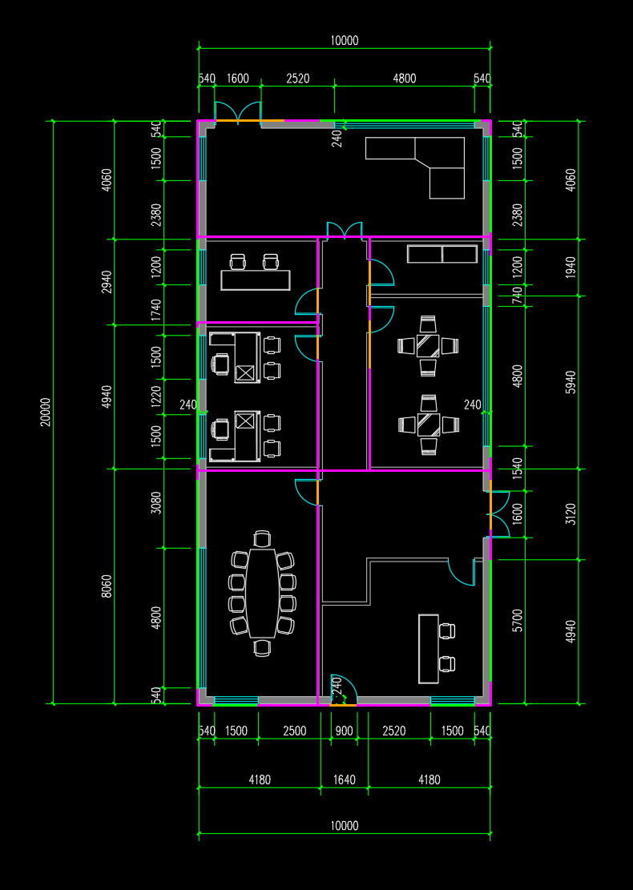

sm24 原图还原质量实验
还原失败，不采用。 新候选可查看，但存在漏隔墙、走廊截断、折角省略及开口错误。几何自洽通过不代表原图保真。继续采用sm24/run12。
原始五图＋建筑声明，Sonnet medium，937.07秒正常结束；7空间、9窗、8门。生成中未提供旧候选或GT。下方模型保留为本次失败证据。
运行说明 · 原图复核 · 独立评价 · 实际源模型 · 直接打开三维查看器
运行中实际返回的原图回叠
这是模型声明的标定下的真实源投影；收到该图后没有修订。图像本身不判定保真。
